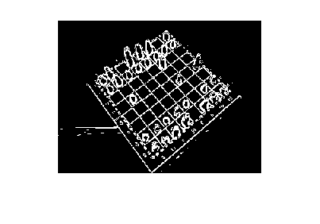
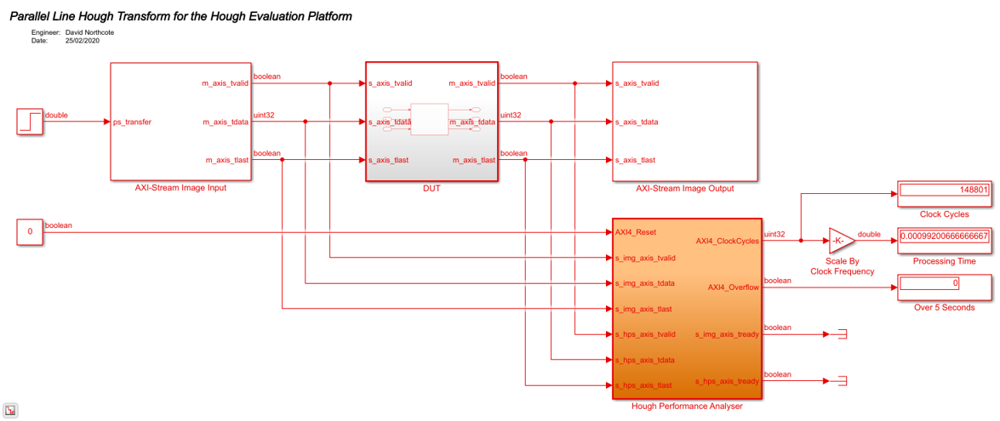

PYNQ Hough Evaluation Platform Example Design
An example of using the PYNQ Hough Evaluation Platform (HEP) is demonstrated using an architecture design of the Line Hough Transform. This design is specifically for Xilinx FPGAs and targets the ZCU104 development board.
Contents
Set Design Parameters
Firstly, set the height and width of the candidate image. Next, the Sobel threshold is used to determine resulting edge pixels. The threshold should be set between 0 and 255. Finally, initialise the \theta and \rho discretisation steps.
height = 240; width = 320; sobelThreshold = 30; dTheta = 1; dRho = 1;
Read in the Candidate Image and Resize
Read in the candidate image, and resize according to the target height and width requirements of the architecture.
I = imread('chess.jpg');
Ir = imresize(I, [height, width]);
imshow(Ir);

Apply Sobel Edge Detection
Obtain the greyscale image as preprocessing step for Sobel edge detection.
Y = rgb2gray(Ir); % Get the edge image by comparing the image gradient to the Sobel threshold % set earlier. [edge] = Sobel(Y, sobelThreshold); imshow(edge);
Run the Example Design
Firstly, create an input array that will be used as the input data for the Hough example design.
inarray = uint8(fi(edge, 0, 1, 0)); % Open the Line Hough Transform (LHT) example design and simulate to obtain % the Hough Parameter Space (HPS). open_system('pynq_hough_evaluation_model.slx'); out = sim('pynq_hough_evaluation_model.slx');
Obtain the Simulation Results
Calculate the maximum displacement and possible angles of orientation to plot the HPS.
maxRho = ceil(sqrt((height/2)^2+(width/2)^2));
theta = 0:dTheta:180-dTheta;
% Now, obtain the HPS and display.
A = reshape(out.simout, [maxRho*2, numel(theta)]);
plot3DHPS(A);